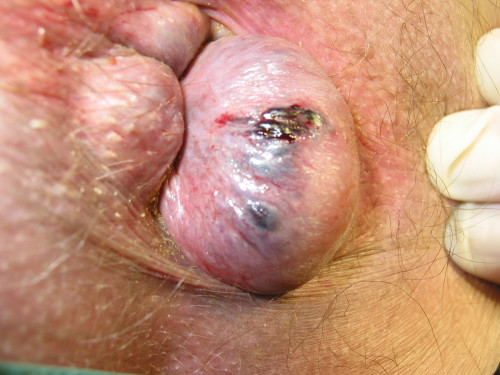
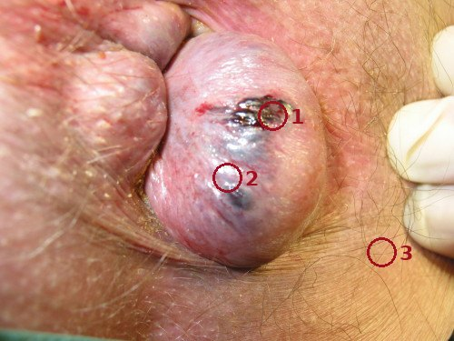

Prurit anal, douleur anale et protrusion anale
Dix concurrents du tri anal
- DX.1 — prurit Ne rang parmi les plaintes de marge, parce que le prurit est à la fois un symptôme cardinal interne et une atteinte cutanée souvent idiopathique[5].
- DX.2 — douleur aiguë Ne rang : la douleur à la défécation ouvre le tri, parce qu'elle réunit peu de sang et la constipation dans la triade aiguë[3].
- DX.3 — protrusion Ne rang, parce que le prolapsus compte parmi les manifestations internes, au même titre que le saignement[2].
- DX.4 — thrombose péri-anale 🚩 E2 Ne rang : on discute une incision de la tuméfaction douloureuse de la marge tant que l'on est avant 72 heures[2].
- DX.5 — fissure aiguë Ne rang, parce que la brèche récente se reconnaît à la douleur rythmée par la selle, avec peu de sang[3].
- DX.6 — fissure chronique Ne rang : passé 6 à 8 semaines, le sphincter interne visible au fond signe la forme installée[3].
- DX.7 — abcès 🚩 E1 Ne rang, parce que la tuméfaction rouge est la phase aiguë de l'infection des glandes et se draine[4].
- DX.8 — fistule Ne rang : la phase chronique montre un orifice externe, et la fistule constituée relève d'un spécialiste[4].
- DX.9 — proctalgia fugax Ne rang, parce que l'exclusion se pose quand la douleur ne dure que quelques secondes ou quelques minutes et que l'examen reste normal[5].
- DX.10 — maladie hémorroïdaire Ne rang tenu par l'ordre des plaintes, bien que cette pathologie anale soit la plus fréquente[2].
1. Définition et sémantique
En 2014, une classification de cabinet sépare le coussin interne de la thrombose située sur la marge[1]. Le coussin est situé au-dessus de la ligne pectinée, alors que la thrombose intéresse des veines péri-anales[2].
Le terme d'hémorroïde externe est faux, parce qu'il désigne en réalité cette thrombose de la marge[2]. La maladie interne, elle, se manifeste par un saignement, un prurit ou un prolapsus[2].
La douleur ne domine pas quand le coussin interne est en cause[2]. Une brèche de l'épithélium, distale à la ligne dentée, définit la fissure[3].
L'ulcération linéaire va de la ligne pectinée jusqu'à la marge, ce qui recoupe la même entité[7]. La forme récente se distingue de la forme installée, parce que le fond ne laisse pas encore voir le sphincter interne[3].
L'infection des glandes anales produit deux temps, et l'abcès en est le temps aigu[4]. Or, la fistule en est le temps chronique, classé selon Parks[4].
Le prurit anal est souvent idiopathique, ou bien lié à une hygiène trop pauvre ou trop agressive[5]. La proctalgia fugax reste un diagnostic d'exclusion, lorsque l'examen est normal[5].
On ne confond pas la protrusion, qui est un prolapsus, avec la simple marisque laissée après un thrombus[2].
On ne confond pas non plus la douleur rythmée par la selle avec la douleur de quelques secondes de la proctalgie[5].
En 2014, la revue suisse pose le cadre de la douleur anale aiguë vue au cabinet[1]. Le coussin reste au-dessus de la ligne pectinée, tandis que la thrombose occupe des veines de la marge[2].
Appeler ce nodule une hémorroïde externe est une erreur de nom, parce que la veine thrombosée n'est pas le coussin[2]. Le mot juste change le geste, lorsque l'incision se discute encore[2].
Saignement, prurit et prolapsus forment le trio interne, alors que la douleur ne doit pas y tenir le premier rôle[2]. Dès que la douleur mène le récit, une autre lésion devient plus probable[2].
La fissure est une brèche épithéliale du canal, distale à la ligne dentée, ce qui la place sous la ligne et non dans le coussin[3]. Elle devient chronique passé 6 à 8 semaines, lorsque le sphincter interne se voit au fond[3].
L'abcès et la fistule naissent d'une infection des glandes, or l'un est le temps aigu et l'autre le temps chronique[4]. La classification de Parks concerne la fistule, tandis que le cabinet reconnaît d'abord l'orifice ou la rougeur[4].
La proctalgia fugax se pose par exclusion, parce que la douleur ne dure que quelques secondes ou quelques minutes[5]. L'examen reste normal, et une hypertonie est alors probable[5].
Le prurit anal concerne 1 à 5 % des patients, ce qui en fait une plainte fréquente mais minoritaire[5]. Il est souvent idiopathique, ou bien lié à une hygiène trop pauvre ou trop rude[5].
La revue de 2011 décrit la proctologie utile au cabinet[6]. La conduite y reste clinique, tandis que l'inspection précède l'ordonnance[6].
Le cabinet nomme d'abord ce qu'il voit, puis il date, puis il choisit le geste[4]. Cette suite vient de la revue de 2014, qui cadre la douleur anale aiguë[1].
Une marisque n'est pas un prolapsus, parce qu'elle ne sort pas à la poussée[2]. Le prolapsus, lui, compte parmi les manifestations internes, avec le saignement et le prurit[2].
2. Épidémiologie en Suisse, puis en Europe
La revue de 2014 décrit la douleur anale aiguë vue au cabinet[1]. Cependant, au cours de la vie, la part des personnes qui rencontrent la maladie hémorroïdaire dépasse 50 %[2].
La revue de 2011 rappelle la proctologie utile au praticien[6]. La même maladie touche alors 50 à 90 % de la population[8].
Elle génère 1177 consultations pour 100 000 habitants, ainsi que 40 à 48 journées d'hospitalisation par an[8]. Ce volume de consultations justifie un tri au cabinet, avant tout avis spécialisé[8].
Le prurit anal touche 1 à 5 %[5]. Il augmente après la selle, ce qui oriente déjà l'interrogatoire[5].
Une fissure accompagne environ 20 % des patients qui ont une maladie hémorroïdaire[2]. Toutefois, le siège postérieur concerne 80 % des fissures, et le siège antérieur 10 %, avec une prédominance féminine pour l'avant[7].
Huit semaines plus tard, le taux de guérison des fissures aiguës dépasse 80 % quand on traite le transit et l'hypertonie[3]. Sous traitement conservateur, 80 % des formes aiguës ferment[7].
Quand une marisque sentinelle est présente, l'échec conservateur des fissures chroniques se voit dans 40 à 50 % des cas[3]. Environ 80 % des fissures opérées par fissurectomie guérissent[3].
La sphinctérotomie latérale atteint 90 % de succès[3]. Néanmoins, à dix ans, l'incontinence concerne l'air dans 36 % des cas, les liquides dans 25 % et les selles moulées dans 5 %[3].
La douleur manque aux stades I à III, alors qu'un stade IV peut faire mal[2]. Cette répartition explique pourquoi une douleur dominante fait chercher autre chose que le seul coussin interne[2].
Au cours de la vie, plus de 50 % des gens rencontrent la maladie hémorroïdaire[2]. En revanche, ce poids explique pourquoi la plainte anale arrive souvent avant toute autre lésion[2].
Une fissure coexiste chez environ 20 % des patients qui ont déjà une maladie hémorroïdaire[2]. Le chiffre oblige à regarder la brèche, même quand le coussin est déjà nommé[2].
L'atteinte va de 50 à 90 % de la population[8]. Par ailleurs, l'écart entre les deux bornes rappelle que la définition du cas change le pourcentage[8].
Cette maladie produit 1177 consultations pour 100 000 habitants[8]. En outre, le taux montre la charge du cabinet, bien au-delà du cas rare[8].
Les séjours hospitaliers liés à cette maladie occupent 40 à 48 journées chaque année[8]. De ce fait, ces séjours montrent que la forme simple du cabinet n'épuise pas le sujet[8].
Sous un soin conservateur, 80 % des fissures aiguës ferment[7]. Or, le siège est postérieur dans 80 % des cas, et antérieur dans 10 %[7].
Le siège antérieur se voit plus souvent chez la femme, ce qui empêche de juger toute fissure antérieure comme banale[7]. Une fissure qui ne ferme pas fait chercher Crohn, cancer ou infection sexuellement transmissible[7].
Plus de 80 % des fissures aiguës guérissent après huit semaines de soins du transit et de l'hypertonie[3]. Le délai de huit semaines devient donc l'horizon du premier contrôle[3].
L'échec du soin conservateur touche 40 à 50 % des formes installées, surtout avec une marisque sentinelle[3]. La marisque sentinelle n'est pas un détail, parce qu'elle annonce cet échec[3].
La fissurectomie obtient environ 80 % de guérisons[3]. Cependant, la sphinctérotomie latérale atteint près de 90 % de succès[3].
À dix ans, l'incontinence à l'air concerne 36 % des opérés par sphinctérotomie latérale[3]. Toutefois, les liquides sont touchés dans 25 % des cas, et les selles formées dans 5 %[3].
Le prurit, limité à 1 à 5 %, reste pourtant assez commun pour un plan de peau[5]. Il augmente après la selle, ce qui oriente l'interrogatoire[5].
Le thrombus met 2 à 3 semaines à se résorber[2]. Ce délai sert de rendez-vous, parce qu'une marisque peut rester ensuite[2].
Avant 72 heures, l'incision du nodule douloureux de marge se discute[2]. Néanmoins, après ce délai, on reste sur le traitement conservateur[2].
La part des patients vus pour cette maladie justifie un plan simple et répété[8]. En revanche, ces 40 à 48 journées passées à l'hôpital chaque année rappellent les formes qui quittent le cabinet[8].
3. Physiopathologie
La continence fine aux gaz dépend des coussins, ce qui interdit de les retirer sans raison[8]. Quatre leviers se combinent : communication artère-veine, retour veineux faible, pression du ventre élevée et sphincter lisse trop tonique[8].
Le saignement est le symptôme cardinal, parce que le coussin est richement shunté[8]. La baisse de l'hyperpression et la régulation du transit forment donc la base du traitement[8].
La thrombose de la marge provient de veines péri-anales, et non du coussin situé au-dessus de la ligne pectinée[2]. Le thrombus se résorbe en 2 à 3 semaines, ce qui peut laisser un repli cutané[2].
Des selles dures précèdent la brèche, et les vaisseaux locaux sont pauvres, surtout en arrière[3]. Le spasme entretient ensuite la brèche, ce qui explique la douleur à chaque exonération[3].
Passé 6 à 8 semaines, le sphincter interne apparaît au fond et la fissure est devenue chronique[3]. Par ailleurs, la forme chronique associe une marisque distale et une papille hypertrophique[7].
Un abcès, ou une fistule située sous la brèche, peut s'y ajouter, d'où la surveillance du fond[7]. L'infection des glandes ouvre l'abcès, puis la fistule si le trajet se chronicise[4].
L'abcès montre une tuméfaction rouge, tandis que la fistule montre un orifice externe[4]. Le prurit s'entretient quand la peau reste humide ou quand le papier est abrasif[5].
La peau devient érythémateuse, grattée, parfois lichénifiée, alors que le canal reste souvent normal[5]. La proctalgie fugax relève d'une hypertonie probable, avec des accès de quelques secondes à quelques minutes[5].
| Perturbation | Exploration | Thérapeutique |
|---|---|---|
| Le shunt et l'hyperpression font saigner le coussin. | L'inspection et le récit du saignement sans douleur dominante suffisent d'abord. | On régule le transit et l'on baisse l'hyperpression. |
| Le spasme entretient la brèche peu vascularisée. | Écarter les fesses montre souvent la fissure, et le toucher retrouve le spasme. | On vise le transit et l'hypertonie. |
| L'infection glandulaire collecte du pus. | La tuméfaction rouge se voit à l'inspection. | On incise et l'on draine. |
| Le thrombus marge la peau. | La tuméfaction douloureuse de la marge se palpe et se voit. | L'incision se discute avant 72 heures, sinon le traitement reste conservateur. |
| L'hypertonie brève déclenche la proctalgie. | L'examen normal permet l'exclusion. | Des bains de siège chauds soulagent cet accès. |
La continence fine au gaz dépend des coussins, parce qu'ils ferment le dernier interstice[8]. Les retirer sans mesure abîmerait cette continence, même si le saignement cessait[8].
Le mécanisme comprend des shunts artérioveineux, un mauvais retour veineux, la pression abdominale et un sphincter lisse hypertonique[8]. En outre, aucun de ces quatre leviers ne se traite par un topique seul[8].
Le siège habituel est postérieur, après une selle dure, là où les vaisseaux manquent[3]. Le spasme entretient ensuite la brèche, ce qui explique la douleur rythmée par la selle[3].
Douleur de selle, une trace de sang et constipation composent la triade aiguë[3]. De ce fait, cette triade désigne la fissure récente, tandis qu'un saignement abondant et indolore désigne autre chose[3].
L'infection des glandes donne d'abord la collection, puis, si le trajet persiste, la fistule[4]. La rougeur diffuse signe le temps aigu, alors que l'orifice externe signe le temps chronique[4].
Le thrombus de la marge se forme dans des veines péri-anales, et non dans le coussin sus-pectinéal[2]. Il se résorbe en 2 à 3 semaines, ce qui peut laisser une marisque[2].
Les stades I à III restent indolores, tandis qu'un stade IV peut devenir douloureux[2]. Une douleur au stade précoce fait donc chercher une lésion associée[2].
Le prurit augmente après la selle, parce que le passage irrite une peau déjà fragilisée[5]. La peau devient érythémateuse, grattée, parfois lichénifiée, et le canal reste souvent normal[5].
Une hygiène insuffisante laisse macérer, tandis qu'une hygiène agressive entretient le grattage[5]. Les deux excès aboutissent au même cercle, ce qui interdit le conseil unique[5].
La proctalgie brève correspond probablement à une hypertonie, lorsque l'examen n'a rien montré[5]. La durée, de quelques secondes à quelques minutes, la sépare de la fissure[5].
La continence fine au gaz dépend des coussins, ce qui oblige à respecter l'anatomie si une chirurgie est discutée[8]. Aux stades 3 et 4, une chirurgie se discute, tandis que les stades 1 et 2 restent du domaine conservateur[8].
Hyperpression abdominale et hypertonie du sphincter lisse figurent parmi les mécanismes, parce que le retour veineux est déjà insuffisant[8]. On baisse d'abord cette hyperpression, avant de parler d'exérèse[8].
Le spasme du sphincter entretient la fissure, ce qui rend la selle douloureuse[3]. Des selles dures ouvrent la brèche sur un territoire peu vascularisé, souvent en arrière[3].
Un abcès ou une fistule sous la brèche peut s'ajouter à la forme chronique[7]. Or, cette complication concerne l'infection des glandes, au-delà de la seule brèche[4].
Le retour veineux insuffisant laisse les coussins se gorger, lorsque la pression abdominale monte[8]. L'hypertonie du sphincter lisse s'ajoute à ce mécanisme, ce qui ferme mal le cycle[8].
On draine.[4] La collection rouge ne se laisse pas attendre.[4]
On date.[2] Le nodule de marge a une horloge de 72 heures.[2]
On regarde.[3] Écarter les fesses montre souvent la brèche.[3]
On sèche.[5] La peau grattée a besoin d'air et de calme.[5]
On vérifie.[5] Un canal normal ne clôt pas le prurit.[5]
Quand la selle dure, la brèche postérieure et le spasme se renforcent, parce que la douleur revient à chaque passage.[3]
Le coussin qui saigne sans douleur se traite d'abord par le transit et par la baisse de la pression abdominale, parce que ces deux leviers passent avant le geste.[8]
La thrombose localisée se distingue de la collection diffuse par ses bords nets, ce qui décide entre une incision datée et un drainage.[2]
On draine la tuméfaction rouge visible.[4]
On date le nodule douloureux.[2]
On écarte les deux fesses.[3]
On sèche la peau grattée.[5]
On touche sans forcer le spasme.[7]
On évite le papier abrasif.[5]
On régule d'abord le transit.[8]
On refuse l'ordonnance téléphonique.[8]
Le fond montre le sphincter interne.[3]
Le frottis vise la mycose cutanée.[5]
La biopsie vise la lésion tumorale.[5]
Les bains chauds calment la proctalgie.[5]
Quand la selle est dure, la brèche postérieure et le spasme se renforcent ensemble, parce que la douleur revient à chaque passage et que seul un transit plus mou interrompt ce cercle.[3]
Le coussin qui saigne sans douleur vraie se traite d'abord par le transit et par la baisse de la pression abdominale, parce que ces deux leviers précèdent toute discussion d'un geste.[8]
La thrombose localisée se reconnaît à ses bords nets, tandis que la collection diffuse est rouge et mal limitée, ce qui sépare l'incision datée du drainage.[4]
Une fissure qui reste ouverte malgré le soin du transit fait chercher autre chose que la constipation, parce que Crohn, un cancer ou une infection transmise sexuellement peuvent tenir la brèche.[7]
Le prurit qui s'aggrave après la selle, sur une peau rouge et grattée avec un canal souvent normal, conduit au frottis puis, si le doute tumoral persiste, à la biopsie.[5]
L'incision du nodule douloureux de la marge se discute tant que le délai de 72 heures n'est pas dépassé.[2]
Quand le récit commence par un saignement à la selle et que la douleur ne mène pas, le coussin interne reste le premier nom, parce que ce signe ouvre le tri[2].
Un nodule douloureux limité à la marge se distingue du coussin, et l'incision se discute seulement avant 72 heures, délai après lequel le traitement reste conservateur, au moment de conclure[2].
Les stades I à III peuvent saigner ou procider sans faire mal, tandis qu'un stade IV peut devenir douloureux, ce qui impose de revoir la marge, avant la sortie du[2].
La brèche siège sous la ligne dentée, souvent après une selle dure, et le spasme entretient la douleur à chaque passage, ce qui vise le transit et l'hypertonie[3].
Huit semaines de ce double soin font dépasser 80 % de guérisons pour la forme aiguë, et cet horizon sert à juger si la brèche a cédé, sans changer de[3].
Passé 6 à 8 semaines, le sphincter interne visible au fond renomme la fissure, et une marisque sentinelle accompagne souvent l'échec situé entre 40 et 50 %, et le rendez-vous[3].
La sphinctérotomie latérale atteint 90 %, cependant à dix ans l'air est concerné dans 36 % des cas, puis 25 % pour les liquides et 5 % pour les selles formées[3].
La tuméfaction rouge et diffuse est le temps aigu de l'infection des glandes, et elle se draine souvent sous anesthésie locale, dès que l'inspection la montre, pour ne pas perdre[4].
La fistule, temps chronique, se reconnaît à un orifice externe, et le trajet douteux appelle une image endorectale ou une IRM pour voir les sphincters, dès la première consultation[4].
Pendant le drainage, chercher le trajet reste controversé, parce que l'on se limite à la collection et que la fistule constituée part vers un avis spécialisé, quand on revoit le[4].
Le prurit concerne 1 à 5 % des patients, augmente après la selle et marque une peau rouge ou grattée, tandis que le canal reste souvent normal, à la lumière[5].
Un lavage trop pauvre et un lavage trop rude ferment le même cercle, et l'on garde la peau propre et sèche en évitant le papier abrasif, et cela se dit[5].
Un accès de quelques secondes ou de quelques minutes, avec un examen normal, permet de retenir la proctalgia fugax et de proposer des bains de siège chauds, sans ajouter d'examen[5].
La fissure aiguë ferme dans 80 % des cas sous traitement conservateur, le siège est postérieur dans 80 % des cas et antérieur dans 10 %, avant d'adresser plus loin[7].
Le toucher confirme le spasme sans forcer, et l'anuscopie n'apporte pas le diagnostic, parce que la brèche vue en écartant les fesses suffit, si le tableau reste le même[7].
Une fissure qui ne ferme pas fait évoquer Crohn, un cancer ou une infection transmise sexuellement, et la forme installée montre souvent marisque et papille, et l'on s'y tient[7].
La maladie touche 50 à 90 % de la population, produit 1177 consultations pour 100 000 habitants et occupe 40 à 48 journées d'hôpital chaque année, pour garder une conduite[8].
Les coussins aident la continence fine aux gaz, par des shunts artérioveineux, un retour veineux faible, une pression abdominale haute et un sphincter lisse tonique, dès que le doute apparaît[8].
On ne donne pas l'ordonnance au téléphone, parce que l'inspection peut montrer une fissure, une thrombose ou une collection que le récit seul ne dit pas, sans multiplier les gestes[8].
Aux stades 1 et 2 le traitement conservateur suffit, tandis qu'aux stades 3 et 4 une chirurgie se discute, à condition de respecter l'anatomie, et le contrôle le confirme[8].
Metamucil® se prend avec un grand verre d'eau froide et reste contre-indiqué avant 6 ans, ainsi qu'en cas d'iléus, de sténose ou de fécalome, au lit du patient[9].
Un saignement intestinal de cause inconnue, une douleur abdominale inexpliquée et l'échec répété de l'effet laxatif interdisent aussi cette poudre de plantain, dans les jours qui suivent[9].
Si le changement alimentaire a échoué, grossesse et allaitement permettent la poudre, tandis que le diabète et les hormones thyroïdiennes imposent une surveillance, parce que la glycémie varie[9].
On sépare la poudre des autres médicaments d'au moins 1 heure, parce que digitaliques, anticoagulants, antiépileptiques, antidépresseurs, sels et vitamines sont moins absorbés, et l'on l'explique ainsi[9].
Le thrombus de la marge se résorbe en 2 à 3 semaines, puis une marisque peut rester, ce que l'on dit quand les 72 heures sont dépassées et que l'on n'incise plus[2].
Une fissure latérale ouvre un bilan vers Crohn, puis syphilis, tuberculose et carcinome, parce que ce siège n'est pas celui de la constipation ordinaire, à chaque nouvelle selle[3].
La revue suisse de 2014 cadre la douleur anale aiguë au cabinet, et c'est là que l'on date le nodule, que l'on regarde la marge et que l'on choisit le geste[1].
Voir la marge précède l'ordonnance, parce qu'un récit téléphonique ne distingue pas le coussin, la fissure, la thrombose et la collection rouge, pour la visite de contrôle[8].
Un dermocorticoïde de courte durée peut calmer le prurit, cependant il expose à l'atrophie cutanée, ce qui interdit de le continuer sur une peau déjà fine, si rien d'autre n'apparaît[5].
La classification de Parks concerne la fistule, mais le cabinet commence par l'orifice ou par la rougeur et ne devine pas un trajet invisible, et le plan reste celui-là[4].
4. Démarche diagnostique
On exclut d'abord E1, parce que la tuméfaction rouge se draine sans attendre une image[4]. E2 vient ensuite, lorsque le nodule douloureux de la marge peut encore être incisé avant 72 heures[2].
La maladie hémorroïdaire reste la pathologie anale la plus fréquente, alors que la douleur ne doit pas y dominer[2]. Une douleur qui domine fait donc chercher une fissure, une thrombose ou un abcès[3].
La triade aiguë rassemble une douleur de selle, une trace de sang et la constipation, ce qui désigne la fissure récente[3]. Une fissure latérale, en revanche, conduit vers Crohn, vers la syphilis, vers la tuberculose ou vers un carcinome[3].
Quand la fissure ne guérit pas, on évoque Crohn, un cancer, ou une infection transmise par contact sexuel[7]. La proctalgie ne se retient qu'après un examen normal, parce qu'elle est un diagnostic d'exclusion[5].
Le prurit qui augmente après la selle, avec un canal souvent normal, oriente vers la peau plutôt que vers le canal[5]. Cependant, le saignement sans douleur dominante oriente, lui, vers le coussin interne[8].
| Diagnostic | Signe qui tranche | Examen | Mécanisme | Conduite et rang E |
|---|---|---|---|---|
| DX.1 prurit. La peau gratte et le canal est souvent normal. | Le prurit augmente après la selle. | On regarde la peau, puis l'on demande un frottis. | L'hygiène trop pauvre ou trop agressive entretient le cercle. | On sèche la peau. Pas de rang E. |
| DX.2 douleur aiguë. La douleur rythmée par la selle ouvre le tri. | Peu de sang accompagne la douleur de la selle. | Écarter les fesses suffit souvent. | Le spasme entretient une brèche. | On vise le transit. Pas de rang E. |
| DX.3 protrusion. Le prolapsus est un symptôme cardinal interne. | La procidence apparaît à la poussée. | L'inspection à la selle reconstituée montre le prolapsus. | Le coussin descend au-delà de la marge. | Les stades III et IV vont vers un avis spécialisé. Pas de rang E. |
| DX.4 thrombose péri-anale. Le nodule douloureux siège sur la marge. | La tuméfaction est localisée, non rouge et diffuse. | L'inspection de la marge tranche avec l'abcès. | Des veines péri-anales thrombosent. | 🚩 E2. L'incision se discute avant 72 heures. |
| DX.5 fissure aiguë. La brèche est récente et distale à la ligne dentée. | La triade unit douleur, peu de sang et constipation. | On écarte les fesses sans forcer le toucher. | Des selles dures ouvrent un terrain peu vascularisé. | On traite le transit et l'hypertonie. Pas de rang E. |
| DX.6 fissure chronique. Le fond laisse voir le sphincter interne. | Le délai dépasse 6 à 8 semaines. | On voit la marisque distale et la papille hypertrophique. | Le spasme maintient la brèche. | La chirurgie ambulatoire se discute si le traitement échoue. Pas de rang E. |
| DX.7 abcès. La collection est la phase aiguë. | La tuméfaction est rouge. | L'inspection suffit à reconnaître la collection. | Une glande anale s'infecte. | 🚩 E1. On incise et l'on draine. |
| DX.8 fistule. L'orifice externe signe la phase chronique. | Un orifice cutané écoule. | Si le trajet est douteux, l'échographie endorectale ou l'IRM le précise. | Le trajet glandulaire s'est chronicisé, selon Parks. | La fistule constituée va au spécialiste. Pas de rang E. |
| DX.9 proctalgia fugax. L'accès est court et l'examen est normal. | La douleur dure quelques secondes ou quelques minutes. | L'examen normal permet l'exclusion. | L'hypertonie est probable. | Les bains chauds de siège restent le soulagement usuel. Pas de rang E. |
| DX.10 maladie hémorroïdaire. C'est la pathologie anale la plus fréquente. | Le saignement domine, pas la douleur. | On examine, et l'on ne prescrit pas par téléphone. | Shunts, retour veineux faible et hyperpression se combinent. | Les stades 1 et 2 restent conservateurs. Pas de rang E. |
Le premier regard cherche la tuméfaction rouge, parce qu'elle se draine sans attendre une image[4]. Le nodule localisé de marge vient ensuite, tant que ces 72 heures ne sont pas passées[2].
Passé 72 heures, le traitement de la thrombose reste conservateur[2]. On prévient alors qu'une marisque peut persister après la résorption[2].
On écarte les fesses pour voir la fissure, ce qui suffit souvent à l'examen[3]. Une fissure latérale conduit le diagnostic vers Crohn, syphilis, tuberculose ou carcinome[3].
Le toucher confirme le spasme sans forcer, lorsque la douleur de selle est au premier plan[7]. L'anuscopie est inutile dans cette situation, parce qu'elle n'ajoute pas le diagnostic[7].
On ne prescrit pas au téléphone, parce que voir la marge change la conduite[8]. Le symptôme cardinal du coussin reste le saignement, et non la douleur[8].
Si le trajet fistuleux est douteux, l'image par échographie endorectale, ou bien l'IRM, montre le parcours et les muscles sphinctériens[4]. La fistule déjà constituée relève d'un avis spécialisé[4].
Le prurit à canal normal conduit au frottis, afin de ne pas manquer une mycose[5]. La biopsie vient si l'on craint une lésion tumorale[5].
La proctalgie ne se retient qu'après un examen normal[5]. Toutefois, des bains de siège chauds en sont le soulagement usuel[5].
On date la plainte en heures pour la thrombose, et en semaines pour la fissure[2]. Les deux horloges ne se mélangent pas, parce que le geste change[3].
Une brèche postérieure après des selles dures reste le tableau le plus commun[7]. Néanmoins, le siège postérieur concerne 80 % des fissures, et le siège antérieur 10 %[7].
5. Anamnèse ciblée et drapeaux rouges
On date la douleur par rapport à la selle, parce que le rythme exonérateur désigne la fissure[7]. On demande aussi depuis quand le nodule de marge est douloureux, afin de savoir si l'on est encore avant 72 heures[2].
Un saignement isolé, sans douleur dominante, oriente vers le coussin interne[2]. Une procidence à la poussée complète ce récit, parce que le prolapsus est un symptôme cardinal[2].
On fait préciser la durée des accès, lorsque le patient décrit des éclairs de quelques secondes à quelques minutes[5]. On interroge l'hygiène, trop pauvre ou trop agressive, parce que le prurit s'y nourrit[5].
Une fissure latérale est un drapeau, car elle impose la recherche d'une maladie de Crohn, d'une syphilis, d'une tuberculose ou d'un carcinome[3]. Une fissure qui ne guérit pas impose la même vigilance, y compris pour une infection sexuellement transmissible[7].
On ne prescrit pas par téléphone, parce que l'œil sur la marge modifie le choix[8]. Les selles dures et la constipation entrent dans la triade, ce qui relie l'histoire au spasme[3].
| Drapeau | Signification | Action |
|---|---|---|
| La marge porte une tuméfaction rouge. | C'est la phase aiguë de l'infection glandulaire. | On incise et l'on draine, souvent sous anesthésie locale. |
| Un nodule douloureux de la marge a moins de 72 heures. | Le thrombus est encore accessible à l'incision. | On discute l'incision, sinon le traitement devient conservateur. |
| La fissure siège sur le côté. | Elle sort du terrain postérieur peu vascularisé. | On cherche Crohn, syphilis, tuberculose ou carcinome. |
| La fissure ne guérit pas. | Le traitement conservateur a échoué ou une autre maladie est en cause. | On suspecte Crohn, cancer ou infection sexuellement transmissible. |
| La douleur domine alors que l'on croyait à un simple coussin interne. | Les stades I à III restent indolores. | On cherche fissure, thrombose ou abcès. |
| Le prurit s'accompagne d'une peau lichénifiée et le canal est normal. | La cause peut être cutanée, mycosique ou tumorale. | Le frottis vise la mycose, et la biopsie vise la lésion tumorale. |
On demande d'abord si la douleur suit la selle, parce que ce rythme désigne la fissure[7]. Peu de sang sur le papier, avec la constipation, définit la triade[3].
Un saignement sans douleur au premier plan oriente vers le coussin interne[8]. Le prolapsus se raconte à la poussée, ce qui le distingue d'une marisque fixe[2].
On date le nodule douloureux de la marge, afin de savoir si l'on est avant 72 heures[2]. Au-delà, l'incision ne reste plus le choix de première ligne[2].
On demande depuis quand la brèche est vue, parce que 6 à 8 semaines séparent la forme aiguë de la forme chronique[3]. Une marisque distale et une papille hypertrophique racontent la forme installée[7].
Le prurit qui s'aggrave après la selle, avec un canal normal, oriente vers la peau[5]. On demande comment le patient se lave et s'essuie, parce que les deux excès d'hygiène comptent[5].
Une douleur de quelques secondes, avec un examen normal, fait évoquer la proctalgia fugax[5]. En revanche, elle ne se confond pas avec la douleur de selle, qui dure le temps du passage[3].
On cherche un suintement par un orifice, ce qui évoque la fistule plutôt que le prurit sec[4]. La fièvre et la rougeur diffuse racontent l'abcès, tandis qu'un orifice calme raconte la fistule[4].
Chez la femme, une fissure antérieure reste possible, parce que ce siège concerne 10 % des fissures et prédomine dans ce groupe[7]. On ne la banalise pas, parce qu'une fissure qui ne guérit pas reste un signal[7].
Souvent aucune cause nette n'est trouvée, ou bien le lavage est trop pauvre, ou bien il est trop rude[5]. Il augmente après la selle, tandis que le canal reste souvent normal[5].
La peau doit rester propre et sèche, le papier abrasif s'évite, et le transit se régularise[5]. Un dermocorticoïde court expose à l'atrophie, ce qui en limite la durée[5].
On demande si le sang est abondant ou limité à une trace, afin de séparer le coussin de la fissure[2]. La fissure saigne peu, ce qui entre dans la triade avec la constipation[3].
On demande les traitements déjà tentés sur la peau, afin de savoir si un dermocorticoïde a déjà duré[5]. L'atrophie se prévient en gardant cet usage court[5].
6. Examen physique, région par région
Marge anale
On écarte d'abord les fesses, parce que cet écartement montre souvent la fissure sans autre manœuvre[3]. Le normal est une marge souple, sans nodule violacé et sans collection rouge[4].
Le pathologique est soit un nodule localisé de la marge, soit une tuméfaction rouge[2]. Le premier oriente vers la thrombose, tandis que la seconde oriente vers l'abcès[4].
On ouvre le quand il faut séparer ces deux aspects[4].
La modalité est la photographie clinique, et le cadrage est un gros plan de la marge anale. La position est celle de l'inspection, tandis que la latéralité n'est pas inscrite sur le fichier. Aucune identité ne reste visible sur le cliché.

Regardez d'abord ce cliché brut et cherchez le signe vous-même[2].

Le premier repère est posé sur le point sombre au sommet du nodule[2]. Par ailleurs, le deuxième repère couvre le corps du nodule de marge, et le troisième la peau voisine qui n'est pas un placard diffus[4].
Ce point sombre ne prouve pas à lui seul une nécrose étendue, parce que le cliché montre surtout un nodule localisé[2]. Le gant en bord d'image n'est pas une lésion, ce qui évite de le prendre pour un orifice[4].
Ce que l'image décide : ce nodule localisé de marge correspond à E2, tandis qu'une tuméfaction rouge diffuse correspondrait à E1[4]. L'incision du nodule se discute avant 72 heures, alors que la collection rouge se draine[2].
Canal anal
Le toucher confirme le spasme, sans forcer, lorsque l'on suspecte une fissure[7]. L'anuscopie n'apporte rien dans cette situation, parce que la douleur suffit à limiter l'examen[7].
Le canal du prurit est souvent normal, ce qui déplace l'attention vers la peau[5]. Un orifice externe, en revanche, fait retenir la fistule[4].
Peau péri-anale
La peau normale est sèche, sans fissure de grattage et sans lichénification[5]. En outre, la peau pathologique est érythémateuse, grattée, parfois lichénifiée[5].
On demande alors un frottis à la recherche d'une mycose, et une biopsie si une lésion tumorale est possible[5]. On garde ensuite la peau propre et sèche, en évitant le papier abrasif[5].
Périnée et abdomen
On palpe le périnée à la recherche d'une collection qui dépasse la marge, parce que l'abcès est une tuméfaction rouge[4]. L'abdomen entre dans l'examen quand une fissure latérale fait suspecter une maladie de Crohn[3].
L'examen de la proctalgie reste normal, ce qui autorise l'exclusion seulement après ce constat[5]. On ne force pas un anus douloureux, parce que le spasme se confirme déjà au toucher prudent[7].
À la marge, on cherche le nodule violacé localisé, parce qu'il tranche avec le placard rouge[2]. La collection rouge, elle, se draine, souvent sous anesthésie locale[4].
Dans le canal, écarter les fesses montre la brèche distale à la ligne dentée[3]. De ce fait, le fond qui laisse voir le sphincter interne signe la forme chronique, passé 6 à 8 semaines[3].
Le toucher, s'il est fait, confirme le spasme sans forcer[7]. On s'arrête si la douleur l'impose, parce que le diagnostic visuel suffit souvent[3].
La peau péri-anale se lit à l'érythème, aux stries de grattage et à la lichénification[5]. Un canal normal n'innocente pas la peau, lorsque le prurit domine[5].
L'orifice externe, sur le périnée, signe la fistule[4]. Or, en cas de doute sur le trajet, l'échographie endorectale ou l'IRM décrit les sphincters[4].
L'abdomen se palpe si l'on craint une maladie de Crohn associée à une fissure latérale[3]. La fissure latérale ne constitue pas une fissure de constipation ordinaire[3].
On ne cherche pas la fistule pendant le drainage, parce que cette recherche reste controversée[4]. Les fistules constituées vont au spécialiste, tandis que l'abcès se draine au cabinet quand l'anesthésie locale suffit[4].
L'anuscopie ne confirme pas la fissure[7]. Cependant, elle ne remplace pas le simple écartement des fesses[3].
On écarte les fesses avant tout instrument, parce que la brèche se voit ainsi[3]. Le toucher ne force pas le spasme, et l'anuscopie ne confirme pas la fissure[7].
La marisque distale et la papille hypertrophique se voient avec la fissure chronique[7]. Toutefois, leur présence, avec un délai de 6 à 8 semaines, confirme la forme installée[3].
7. Approche syndromique
7.1 Douleur rythmée par la selle
Le signe fonctionnel est une douleur qui revient à chaque exonération, parce que le spasme ferme la brèche[7]. Le signe physique est la brèche distale, souvent vue en écartant les fesses[3].
On cherche ce syndrome en demandant le rapport avec la selle, puis en regardant la marge[3]. Peu de sang et la constipation complètent la triade, ce qui distingue cette douleur d'un saignement isolé[3].
La triade aiguë associe la douleur de la défécation, une faible quantité de sang et la constipation[3]. Néanmoins, le mécanisme est une brèche sur un terrain peu vascularisé, entretenue par le spasme[3].
Le piège est de croire qu'un coussin interne explique cette douleur, alors que les stades I à III restent indolores[2]. On traite le transit et l'hypertonie, parce que ces deux leviers visent le spasme et la selle dure[3].
7.2 Saignement sans douleur dominante
Le signe fonctionnel est le saignement, symptôme cardinal du coussin[8]. Le signe physique peut manquer au repos, ce qui oblige à faire raconter la selle[2].
On ne laisse pas la douleur dominer le récit, parce qu'elle déplace le diagnostic vers la fissure, la thrombose ou l'abcès[2]. Le prurit et le prolapsus peuvent s'y associer, puisqu'ils comptent parmi les manifestations internes[2].
7.3 Protrusion et nodule de marge
Le prolapsus se voit à la poussée, tandis que le nodule thrombotique est douloureux et fixé à la marge[2]. On sépare donc la procidence du coussin et la thrombose veineuse péri-anale[2].
Une marisque résiduelle n'est pas une procidence active, parce qu'elle peut rester après la résorption du thrombus[2]. Les stades 3 et 4 font discuter une chirurgie qui respecte l'anatomie[8].
Les stades I à III restent indolores, et seul un stade IV peut devenir douloureux[2].
Aux stades I et II, le transit et les mucilages forment le traitement, tandis qu'un veinotonique oral couvre au moins six semaines[2].
Les topiques restent discutés, et l'on n'en fait pas le socle[2]. En revanche, après l'échec de cette base, on discute une sclérothérapie ou une ligature[2].
Dès les stades III et IV, l'avis spécialisé s'impose[2]. Les stades 1 et 2 répondent en revanche au traitement conservateur[8].
7.4 Prurit et accès brefs
Le prurit augmente après la selle, et la peau peut être érythémateuse, grattée ou lichénifiée[5]. Le canal souvent normal sépare ce syndrome d'une fissure, parce que la brèche, elle, se voit[5].
La proctalgie se manifeste par des accès de quelques secondes à quelques minutes, avec un examen normal[5]. L'hypertonie est probable, et les bains de siège chauds sont le moyen alors décrit[5].
La douleur rythmée par l'exonération est le signe cardinal de la fissure[7]. Par ailleurs, peu de sang et la constipation complètent le tableau aigu[3].
Le saignement sans douleur dominante raconte le coussin, parce que la douleur n'y tient pas le premier rôle[2]. Si la douleur apparaît quand même, on reprend le tri depuis la marge[4].
La protrusion se montre à la poussée, et elle compte parmi les symptômes internes[2]. Une marisque laissée par un ancien thrombus reste fixe, tandis que le prolapsus descend à la poussée[2].
Le nodule de marge, douloureux, localisé, se discute avant 72 heures[2]. La tuméfaction rouge et diffuse ne se discute pas de la même façon, parce qu'elle se draine[4].
Le prurit avec peau abîmée et canal normal forme un syndrome cutané[5]. En outre, l'accès de quelques secondes, avec un examen normal, constitue un autre syndrome, celui de la proctalgie[5].
La fistule se plaint d'un écoulement, alors que l'abcès se plaint d'une douleur croissante et d'une rougeur[4]. Les deux partagent l'infection des glandes, ce qui explique leur parenté[4].
La fissure chronique associe marisque distale et papille hypertrophique[7]. De ce fait, un abcès ou une fistule sous la brèche peut s'y ajouter[7].
Aux stades 1 et 2, le traitement conservateur suffit[8]. Or, aux stades 3 et 4, on discute une chirurgie qui doit respecter l'anatomie[8].
Un prolapsus qui rentre ou qui sort raconte le stade, lorsque la douleur est absente[2]. Dès qu'un stade IV devient douloureux, on cherche une lésion de plus[2].
Le syndrome de la collection se reconnaît à la rougeur et à la douleur croissante[4]. Le syndrome de la fistule se reconnaît à l'orifice et à l'écoulement, ce qui est le temps chronique[4].
8. Diagnostic positif et critères
En 2014, le diagnostic de fissure chronique exige plus que la seule douleur[1]. Cependant, il faut que le délai dépasse 6 à 8 semaines et que le sphincter interne apparaisse au fond[3].
La forme chronique associe en outre une marisque distale et une papille hypertrophique[7]. La forme aiguë, elle, se contente de la triade et d'une brèche récente[3].
L'abcès se reconnaît à la tuméfaction rouge, sans qu'une image soit exigée quand ce signe est clair[4]. La fistule se reconnaît à l'orifice externe, et Parks sert à classer le trajet constitué[4].
La thrombose péri-anale se pose devant une tuméfaction douloureuse de la marge, et le terme d'hémorroïde externe ne convient pas[2]. Le coussin interne se retient quand le saignement, le prurit ou le prolapsus dominent, sans douleur au premier plan[2].
La proctalgia fugax ne s'affirme pas sur un seul accès, parce que l'examen doit être normal et les autres causes écartées[5]. Un prurit avec canal normal ne prouve pas l'absence de mycose ni de lésion tumorale, d'où le frottis et, si besoin, la biopsie[5].
| Entité | Ce qui suffit | Ce qui ne suffit pas |
|---|---|---|
| Fissure aiguë. | La triade et une brèche distale à la ligne dentée suffisent. | Un saignement isolé, sans douleur de selle, ne suffit pas. |
| Fissure chronique. | Un délai de 6 à 8 semaines et le sphincter interne au fond suffisent, surtout avec marisque et papille. | La seule ancienneté racontée, sans voir le fond, ne suffit pas. |
| Abcès. | La tuméfaction rouge suffit à retenir la phase aiguë. | Un orifice externe seul ne suffit pas, il oriente vers la fistule. |
| Thrombose péri-anale. | La tuméfaction douloureuse de la marge suffit. | Le mot d'hémorroïde externe ne suffit pas, parce qu'il est faux. |
| Maladie hémorroïdaire interne. | Saignement, prurit ou prolapsus, sans douleur dominante, suffisent à l'orienter. | Une douleur dominante ne suffit pas à la retenir. |
| Proctalgia fugax. | Accès brefs et examen normal suffisent à l'exclusion. | Une douleur de selle ne suffit pas à la nommer. |
On affirme la thrombose péri-anale sur un nodule douloureux de la marge, et non sur le mot d'hémorroïde externe[2]. Toutefois, le terme d'hémorroïde externe est faux[2].
On affirme la fissure aiguë sur la brèche et la triade, lorsque le fond ne montre pas encore le sphincter interne[3]. On affirme la forme chronique passé 6 à 8 semaines, quand ce sphincter apparaît[3].
On affirme l'abcès sur la tuméfaction rouge[4]. Néanmoins, on affirme la fistule sur l'orifice externe, ou sur un trajet précisé par l'image en cas de doute[4].
On affirme le prurit quand la peau est érythémateuse, grattée ou lichénifiée, et que le canal est souvent normal[5]. Le frottis et, si besoin, la biopsie empêchent de clore trop vite[5].
On affirme la proctalgia fugax seulement si l'accès est court et l'examen normal[5]. C'est un diagnostic d'exclusion, ce qui interdit de le poser devant une brèche[5].
On affirme la maladie hémorroïdaire sur le saignement, le prurit ou le prolapsus, lorsque la douleur ne domine pas[2]. Une fissure concomitante existe chez environ 20 % de ces patients, et elle se cherche[2].
La revue de 2014 fournit ces critères de cabinet[1]. En revanche, la revue de 2011 confirme les mêmes repères pour la fissure et pour le coussin[6].
La fistule est le temps chronique de l'infection des glandes, et Parks sert à la classer[4]. L'orifice externe la fait reconnaître, tandis que le trajet douteux appelle l'échographie endorectale ou l'IRM[4].
Chercher une fistule pendant le drainage reste controversé[4]. La fistule constituée relève d'un spécialiste, parce que le trajet et les sphincters décident du geste[4].
On n'affirme pas la proctalgie si une rougeur, un nodule ou une brèche est visible[5]. L'exclusion exige un examen normal, ce qui est le critère décisif[5].
9. Examens complémentaires
9.a Référence
La référence est clinique pour la fissure, l'abcès, la thrombose et le prolapsus, parce que l'inspection tranche déjà[3]. L'anuscopie est inutile devant une fissure, et l'on ne la présente pas comme un gold standard[7].
9.b Première intention
On écarte les fesses, on touche sans forcer si un spasme est en cause, et l'on regarde la peau[7]. Un frottis cherche une mycose quand le prurit domine et que le canal est normal[5].
On ouvre le pour relire E1 et E2, parce que la photographie enseigne l'inspection[2].
9.c Alternatives
Quand le trajet fistuleux est douteux, l'échographie endorectale ou l'IRM situe le parcours et les sphincters[4]. La revue nomme ces deux examens dans le même doute, et elle ne décrit pas un autre circuit lié à la grossesse[4].
Si l'échographie endorectale est impossible, l'IRM reste l'examen nommé pour le trajet, parce que les deux sont cités ensemble[4]. On n'injecte pas un produit de contraste sur la seule foi de ce texte, puisque la revue ne le prescrit pas[4].
L'échographie endorectale et l'IRM servent quand le trajet ou les sphincters restent douteux[4]. Elles ne remplacent pas l'inspection d'une tuméfaction rouge déjà évidente[4].
Un trajet trans-sphinctérien change l'adresse au spécialiste, parce que la fistule constituée ne se traite pas au cabinet[4]. L'image ne décide pas d'ouvrir une fistule dans le même temps que l'abcès, puisque cette recherche reste controversée[4].
9.d Deuxième intention
Une biopsie cherche une lésion tumorale quand le prurit ou une fissure atypique le justifie[5]. La fistule constituée, comme les stades III et IV, appelle un avis spécialisé, ce qui est déjà une deuxième ligne[2].
Le frottis répond à une question limitée, parce qu'il cherche une mycose sur une peau prurigineuse[5]. Un résultat qui montre une levure conduit à traiter la peau, tout en la gardant sèche[5].
La biopsie définit une autre question, celle d'une lésion tumorale[5]. Par ailleurs, elle ne se substitue pas au frottis, et le canal normal n'annule aucune des deux demandes[5].
| Résultat | Signification | Conduite |
|---|---|---|
| La marge montre un nodule localisé, non un placard rouge. | La thrombose péri-anale est plus probable que l'abcès. | On discute l'incision avant 72 heures. |
| La tuméfaction est rouge. | La phase aiguë glandulaire est retenue. | On incise et l'on draine. |
| Le fond de la fissure laisse voir le sphincter interne. | La fissure a dépassé le cap des 6 à 8 semaines. | On discute l'échec du traitement conservateur. |
| L'échographie ou l'IRM précise un trajet et les sphincters. | La fistule est constituée dans un plan défini. | On adresse au spécialiste. |
| Le frottis trouve une mycose. | Le prurit a une part infectieuse cutanée. | On traite la peau et l'on corrige l'hygiène. |
| La biopsie montre une lésion tumorale. | Le prurit ou la fissure atypique cachait une tumeur. | On oriente vers la prise en charge de cette lésion. |
| L'examen est normal et les accès sont brefs. | L'exclusion vers la proctalgia fugax devient possible. | On propose des bains de siège chauds. |
L'examen de référence de la fissure reste clinique, parce qu'écarter les fesses la montre[3]. L'anuscopie ne constitue pas l'examen de référence[7].
En première intention, on regarde, on touche sans forcer, et l'on lit la peau[7]. Le frottis est le premier prélèvement du prurit, afin de chercher une mycose[5].
La biopsie est l'alternative quand une lésion tumorale est en jeu[5]. Elle ne remplace pas le frottis mycologique[5].
En deuxième intention, si le trajet est douteux, l'image par échographie endorectale, ou bien l'IRM, décrit le trajet[4]. Ces images ne précèdent pas le drainage d'une collection évidente[4].
On ne demande pas d'image pour décider d'inciser un nodule de marge avant 72 heures[2]. L'inspection suffit, tandis que le délai, lui, vient de l'anamnèse[2].
Une fissure latérale déclenche un bilan de Crohn, de syphilis, de tuberculose ou d'un carcinome[3]. En outre, une fissure qui ne guérit pas déclenche la même vigilance, y compris pour une infection sexuellement transmissible[7].
Le toucher qui confirme le spasme ne se force pas[7]. La douleur elle-même est déjà un critère, lorsque elle suit l'exonération[7].
Le saignement isolé ne justifie pas, à lui seul, une exploration lourde au premier contact[8]. De ce fait, on ne prescrit pas au téléphone, et l'on examine avant d'ajouter un examen[8].
Le frottis vise la mycose, et la biopsie vise la lésion tumorale[5]. Les deux prélèvements ne se remplacent pas, lorsque le canal est normal et que la peau gratte[5].
L'image du trajet vient seulement si le doute persiste après l'inspection[4]. Une collection rouge évidente se draine sans attendre cette image[4].
10. Arbre décisionnel
- Si la marge porte une tuméfaction rouge, on retient E1 et l'on incise pour drainer, souvent sous anesthésie locale[4].
- Si le nodule douloureux est localisé à la marge et que l'on est avant 72 heures, on retient E2 et l'on discute l'incision[2].
- Si ce délai est dépassé, le traitement de la thrombose reste conservateur, parce que le thrombus se résorbe en 2 à 3 semaines[2].
- Si la douleur suit la selle, avec peu de sang, on retient la fissure et l'on écarte les fesses[3].
- Si la fissure est latérale ou ne guérit pas, on cherche Crohn, syphilis, tuberculose, carcinome ou une infection sexuellement transmissible[3].
- Si le fond montre le sphincter interne après 6 à 8 semaines, la fissure est chronique et la chirurgie ambulatoire se discute en cas d'échec[3].
- Si le saignement domine sans douleur, on retient le coussin interne et l'on régule le transit[8].
- Si les stades sont 1 ou 2, le traitement conservateur suffit, alors que les stades 3 et 4 font discuter une chirurgie respectueuse de l'anatomie[8].
- Si un orifice externe écoule, on retient la fistule et l'on adresse le trajet constitué[4].
- Si le trajet est douteux, l'image par échographie endorectale, ou bien l'IRM, décrit le trajet et les sphincters[4].
- Si le prurit domine et que le canal est normal, on regarde la peau, on sèche, on demande un frottis et, si besoin, une biopsie[5].
- Si les accès durent quelques secondes ou quelques minutes et que l'examen est normal, on retient la proctalgia fugax et l'on propose des bains de siège chauds[5].
Si E1 est écarté parce que la marge n'est pas un placard rouge, on passe au nodule localisé[4]. Si ce nodule a moins de 72 heures, E2 se discute pour une incision[2].
Si la brèche est médiane et postérieure, la fissure ordinaire reste probable[7]. Si elle est latérale, le bilan change, parce que Crohn, syphilis, tuberculose et carcinome entrent[3].
Si le fond montre le sphincter interne, la forme est chronique[3]. Si le traitement conservateur a échoué, la chirurgie ambulatoire se discute[7].
Si le saignement est isolé, on reste sur le coussin et l'on régule le transit[8]. Si les stades sont 3 ou 4, l'avis spécialisé précède la sortie[8].
Si un orifice écoule, on nomme la fistule et l'on adresse le trajet constitué[4]. Si le prurit domine avec un canal normal, on sèche la peau et l'on prélude par un frottis[5].
Si l'accès dure quelques secondes et que tout l'examen est normal, on retient la proctalgie[5]. Si la durée dépasse ce format court, on reprend la liste depuis la fissure[3].
Si la peau est lichénifiée et le canal normal, le prurit mène le plan[5]. Si un orifice externe s'ajoute, la fistule passe devant le prurit[4].
Si le patient décrit des selles dures et une douleur à chaque passage, la fissure passe devant le coussin[3]. Si le sang vient sans cette douleur, on revient au coussin et au transit[8].
11. Prise en charge selon les recommandations suisses
11.A But
Le but, pour une fissure aiguë, est la guérison, et huit semaines de traitement du transit et de l'hypertonie font dépasser 80 % de guérisons[3].
Pour le coussin, le but est de faire cesser le saignement en baissant l'hyperpression, sans perdre la continence fine au gaz[8].
11.B Moyens
On commence par la régulation du transit et par des mucilages aux stades I et II[2]. On associe un veinotonique par voie orale pendant au moins six semaines, tandis que les topiques restent discutés[2].
Après l'échec de cette base, la sclérothérapie ou la ligature entrent en discussion[2]. Or, dès les stades III et IV, on demande un avis spécialisé, et la chirurgie éventuelle doit respecter l'anatomie[8].
On n'ouvre pas l'ordonnance au téléphone, parce que l'inspection modifie le choix[8]. La poudre Metamucil® se prend à la dose de 7 g per os, une à trois fois, dans un grand verre d'eau froide[9].
Cette poudre facilite la selle en cas de maladie hémorroïdaire, ce qui rejoint la régulation du transit[9]. On la mélange à l'eau froide et on la boit aussitôt, puis un second verre si l'on peut[9].
Contre-indications de Metamucil® : hypersensibilité aux téguments de plantain, hernie hiatale, rétrécissement de l'œsophage, iléus, sténose, paralysie intestinale, fécalome et douleur abdominale de cause inconnue[9]. Metamucil® est aussi contre-indiqué avant 6 ans, et quand un saignement intestinal reste inexpliqué[9].
On l'évite quand les troubles du transit durent depuis plus de 2 semaines, ou quand l'effet laxatif a manqué de façon répétée[9]. À partir de 6 ans, la prise de l'enfant est la moitié d'une cuillère à café[9].
Si le changement alimentaire a échoué, Metamucil® peut être pris pendant la grossesse et pendant l'allaitement[9]. Les patients diabétiques et ceux qui reçoivent des hormones thyroïdiennes restent sous surveillance clinique, parce que la glycémie peut varier[9].
On laisse au moins 1 heure avant un autre médicament, parce que l'absorption peut diminuer, notamment pour les digitaliques, les anticoagulants, les antiépileptiques, les antidépresseurs, les sels minéraux et les vitamines[9]. Une cuillère à café bombée apporte 3.6 g de glucides utilisables, et 1 g de poudre contient 0,49 g de téguments[9].
Le numéro Swissmedic est le n° 17387, et sa révision date de 2015[9]. L'inhalation répétée de la poudre peut sensibiliser, surtout chez un sujet déjà allergique, ce qui impose d'éviter de la respirer[9].
Pour la fissure, on vise le transit et l'hypertonie[3]. Le traitement aigu reste conservateur, et une opération ambulatoire entre en discussion quand la fissure est chronique ou quand ce soin échoue[7].
Parmi les fissures opérées par fissurectomie, environ 80 % guérissent[3]. La sphinctérotomie latérale atteint 90 % de succès, cependant à dix ans l'incontinence touche l'air dans 36 % des cas[3].
Les liquides sont concernés dans 25 % des cas et les selles formées dans 5 %, ce qui se dit avant d'accepter ce geste[3]. Quand une marisque sentinelle est présente, l'échec conservateur des fissures chroniques atteint 40 à 50 %[3].
Urgence, conduite chronologique. On regarde d'abord la marge en écartant les fesses[3].
- Si la tuméfaction est rouge, on incise et l'on draine, souvent sous anesthésie locale[4].
- Si le nodule de marge est douloureux et que l'on est avant 72 heures, on discute l'incision[2].
- Au-delà de 72 heures, on ne propose plus l'incision[2].
- On ne part pas chercher une fistule dans le même temps, parce que cette recherche reste controversée[4].
- Les fistules déjà constituées vont au spécialiste, tandis que la fissure latérale fait ouvrir un bilan de Crohn, de syphilis ou de carcinome[3].
L'abcès se traite par incision et drainage[4]. Cependant, le prurit se traite en gardant la peau propre et sèche, en évitant le papier abrasif et en régularisant le transit[5].
Un dermocorticoïde court expose à l'atrophie cutanée, ce qui limite sa durée[5]. La proctalgie se soulage par des bains de siège chauds[5].
| Moyen | Place | Précision | Limite |
|---|---|---|---|
| Metamucil®, poudre orale, n° 17387. | Mucilage pour réguler la selle, y compris quand des hémorroïdes gênent l'exonération. | Adulte, 7 g per os, une à trois prises, dans un grand verre d'eau froide[9]. | Contre-indiqué avant 6 ans, en cas d'iléus, de sténose ou de saignement inexpliqué. |
| Veinotonique oral, sans nom de spécialité ici. | Associé aux stades I et II. | La durée minimale lue est de six semaines[2]. | Aucune dose en milligrammes n'est reprise. |
| Topiques. | Souvent proposés sur la marge. | Ils restent discutés. | Ils ne forment pas la base du traitement. |
| Dermocorticoïde. | Poussée de prurit. | Usage court. | Le risque est l'atrophie cutanée. |
11.C Surveillance
On revoit la fissure aiguë en gardant l'horizon de huit semaines, parce que c'est le délai où le taux de guérison dépasse 80 %[3]. Passé 6 à 8 semaines, si le sphincter interne est visible au fond, on parle de forme chronique[3].
Le thrombus se surveille sur 2 à 3 semaines, délai de sa résorption, et l'on prévient qu'une marisque peut rester[2]. On surveille aussi l'échec, surtout quand une marisque sentinelle accompagne une fissure chronique[3].
11.D Pronostic, guérison et sortie
Avec un traitement conservateur, 80 % des formes aiguës guérissent[7]. La sortie de la surveillance simple se discute quand la douleur de selle a cessé et que la brèche n'est plus vue[3].
On ne promet pas la continence après sphinctérotomie, parce que les chiffres à dix ans restent ceux de l'air, des liquides et des selles formées[3]. La fistule constituée ne relève pas du seul domicile, parce qu'un avis spécialisé reste nécessaire[4].
Le patient quitte le conseil quand le transit est réglé, la peau sèche, et qu'aucun drapeau de fissure latérale ou de collection rouge ne persiste[5]. Les stades 3 et 4 ne se règlent pas par le seul transit[8].
Le but immédiat, devant la collection rouge, est le drainage[4]. Toutefois, le but, devant la fissure aiguë, est la guérison par le transit et par la baisse de l'hypertonie[3].
Aux stades I et II, le transit et les mucilages constituent la base[2]. Un veinotonique oral s'y associe pour au moins six semaines, tandis que les topiques restent controversés[2].
Après l'échec de cette base, on discute sclérothérapie ou ligature[2]. Néanmoins, dès les stades III et IV, un avis spécialisé devient nécessaire[2].
Les stades 1 et 2 restent conservateurs, et les stades 3 et 4 font discuter une chirurgie qui respecte l'anatomie[8]. En revanche, cette exigence vient du rôle des coussins dans la continence fine au gaz[8].
La poudre se boit dans un grand verre d'eau froide, et un second verre est souhaitable[9]. On laisse au moins 1 heure avant un autre médicament, parce que l'absorption peut diminuer[9].
Metamucil® est contre-indiqué avant 6 ans, en cas d'iléus, de sténose, de paralysie intestinale ou de fécalome[9]. Un saignement intestinal inexpliqué et une douleur abdominale de cause inconnue l'interdisent aussi[9].
Si le changement alimentaire a échoué, la poudre peut être prise pendant la grossesse et l'allaitement[9]. Les patients diabétiques et ceux qui reçoivent des hormones thyroïdiennes restent sous surveillance clinique[9].
La fissure aiguë se traite d'abord de façon conservatrice[7]. Une opération ambulatoire entre en discussion quand la fissure est chronique ou quand ce soin échoue[7].
On dit les chiffres de continence avant une sphinctérotomie latérale, parce que, à dix ans, l'air, les liquides et les selles formées ne sont pas épargnés de la même façon[3]. La fissurectomie, de son côté, guérit environ 80 % des cas[3].
L'incision du nodule de marge se discute avant 72 heures, puis le traitement devient conservateur[2]. Le drainage de l'abcès, lui, ne se décale pas sur ce délai[4].
On garde la peau sèche, on évite le papier abrasif, et l'on limite le dermocorticoïde à cause de l'atrophie[5]. Les bains de siège chauds soulagent la proctalgie, lorsque l'examen est resté normal[5].
On revoit la fissure aiguë avec l'horizon de huit semaines[3]. Par ailleurs, on revoit le thrombus sur 2 à 3 semaines, délai de sa résorption[2].
La sortie simple suppose un transit réglé, une peau sèche et l'absence de collection rouge[5]. En outre, les stades 3 et 4 ne sortent pas sur la seule régulation du transit[8].
Le numéro Swissmedic du mucilage est le n° 17387, et le texte a été revu en 2015[9]. La boîte contient 336 g, ce qui permet de situer la durée d'un flacon sans inventer un rythme[9].
Metamucil® peut être pris pendant la grossesse et pendant l'allaitement si le changement alimentaire a échoué[9]. Avant 6 ans, la poudre est contre-indiquée[9].
Dès 6 ans, la prise de l'enfant est la moitié d'une cuillère à café, tandis que l'adulte prend une cuillère à café bombée[9]. Une cuillère bombée apporte 3.6 g de glucides utilisables, ce qui concerne le patient diabétique[9].
1 g de poudre contient 0,49 g de téguments et 0,51 g de saccharose[9]. On ne la donne pas quand les troubles du transit durent depuis plus de 2 semaines, ni quand l'effet laxatif a manqué de façon répétée[9].
On mélange la poudre à l'eau froide et on la boit aussitôt, avec un second verre si possible[9]. La prise adulte se répète une à trois fois dans la journée, avant ou après les repas[9].
L'hypersensibilité aux téguments de plantain interdit Metamucil®, de même qu'une hernie hiatale ou un rétrécissement de l'œsophage[9]. Un effet laxatif absent de façon répétée l'interdit aussi[9].
Les digitaliques, les anticoagulants, les antiépileptiques, les antidépresseurs, les sels minéraux et les vitamines peuvent être moins absorbés[9]. On sépare alors les prises d'au moins 1 heure, parce que l'absorption peut diminuer[9].
Après échec du transit et des mucilages, la sclérothérapie ou la ligature entre en discussion[2]. De ce fait, le veinotonique oral se poursuit au moins six semaines, tandis qu'aucun milligramme n'est nommé pour cette classe[2].
On ne donne pas la poudre devant un iléus, une sténose ou un fécalome[9]. Or, on ne la donne pas non plus devant un saignement intestinal dont la cause est inconnue[9].
12. Prévention
La prévention primaire repose sur la régulation du transit et sur la baisse de l'hyperpression, parce que ces deux leviers sont la base du traitement des coussins[8]. On évite les selles dures, qui ouvrent la fissure sur un terrain peu vascularisé[3].
La prévention secondaire traite la fissure aiguë avant qu'elle ne montre le sphincter interne, c'est-à-dire avant 6 à 8 semaines[3]. On discute l'incision de la thrombose avant 72 heures, afin de ne pas laisser évoluer le nodule sous le seul traitement conservateur[2].
La prévention tertiaire concerne les stades III et IV et les fistules constituées, parce que le cabinet ne couvre plus ces formes[4]. On prévient aussi l'atrophie en limitant le dermocorticoïde, et l'on garde la peau sèche pour que le prurit ne se chronicise pas[5].
La revue de 2011 porte ces conseils de cabinet[6]. Celle de 2014 les complète pour la douleur aiguë, ce qui fixe la référence suisse de ce cours[1]. Chez la femme, le siège antérieur de la fissure, minoritaire, rappelle de ne pas banaliser une fissure qui n'est pas postérieure[7].
La prévention primaire régule le transit et baisse l'hyperpression abdominale[8]. Les selles dures ouvrent la fissure, ce qui donne à cette régulation un sens préventif[3].
La prévention secondaire traite la fissure avant 6 à 8 semaines, afin que le sphincter interne ne devienne pas visible au fond[3]. Elle discute aussi l'incision de la thrombose avant 72 heures[2].
La prévention tertiaire concerne les stades III et IV et les fistules constituées[4]. Elle limite le dermocorticoïde, parce que l'atrophie cutanée est le prix d'un usage prolongé[5].
Chez la femme, on ne rassure pas trop vite une fissure antérieure[7]. Cependant, le siège postérieur reste le plus commun, dans 80 % des cas, et l'antérieur dans 10 %[7].
La revue suisse porte le conseil de ne pas prescrire au téléphone[8]. Toutefois, la revue de 2014 porte le conseil de drainer la collection et de dater le nodule[1].
Garder la peau sèche prévient le cercle du prurit[5]. Éviter le papier abrasif en fait partie, tandis que le transit réglé diminue le frottement de la selle[5].
Régler la selle protège la fissure récente, parce que la constipation figure dans la triade[3]. Baisser l'hyperpression protège le coussin, parce que ce mécanisme entretient la maladie[8].
Apprendre à sécher la peau après la selle fait partie de la prévention du prurit[5]. Remplacer le papier abrasif par un soin non irritant en fait partie aussi[5].
13. Points clés
- La tuméfaction rouge se draine, et le nodule localisé de marge se discute avant 72 heures[2].
- La douleur ne domine pas dans la maladie interne, alors que la fissure se rythme sur la selle[2].
- Passé 6 à 8 semaines, le sphincter interne au fond signe la fissure chronique[3].
- Le prurit à canal normal appelle un frottis et, si besoin, une biopsie[5].
- On n'ouvre pas l'ordonnance au téléphone, parce que la marge vue modifie le choix[8].
Ces cinq repères ouvrent le tri, lorsque la marge, la selle et la peau ont été lues[4]. Le reste du cours précise le délai, le stade et le prélèvement[2].
14. Pièges et questions fréquentes à l'examen fédéral suisse
| Question | Réponse | Raison |
|---|---|---|
| Peut-on appeler hémorroïde externe le nodule douloureux de la marge ? | Non, ce terme est faux. | Le nodule correspond à une thrombose des veines de la marge. |
| Une douleur dominante aux stades I à III est-elle attendue ? | Non, ces stades restent indolores. | Seul un stade IV peut être douloureux, et la douleur fait chercher une autre lésion. |
| Faut-il une anuscopie pour affirmer une fissure ? | Non, elle est inutile. | Écarter les fesses et un toucher sans forcer suffisent. |
| Quand la fissure devient-elle chronique ? | Au-delà de 6 à 8 semaines, quand le sphincter interne se voit au fond. | La marisque distale et la papille hypertrophique s'y associent souvent. |
| Que faire d'une tuméfaction rouge ? | Inciser et drainer. | C'est la phase aiguë de l'infection des glandes. |
| Faut-il chercher la fistule pendant le drainage ? | Cette recherche reste controversée. | La fistule constituée, elle, va au spécialiste. |
| Quel risque chiffré suit la sphinctérotomie latérale ? | À dix ans, 36 % des cas concernent l'air, 25 % les liquides et 5 % les selles formées[3]. | Le succès approche 90 %, ce qui ne dispense pas de dire l'incontinence. |
Pourquoi une fissure latérale n'est-elle pas une fissure banale ? Parce qu'elle cherche Crohn, la syphilis, la tuberculose ou un carcinome[3].
Pourquoi le prurit à canal normal n'est-il pas clos ? Parce qu'un frottis vise une mycose et qu'une biopsie vise une lésion tumorale[5].
Pourquoi le mot d'hémorroïde externe est-il un piège ? Parce que le nodule de marge est une thrombose de veines péri-anales[2]. Pourquoi une douleur aux stades I à III n'est-elle pas attendue ? Parce que ces stades restent indolores[2].
Pourquoi l'anuscopie n'est-elle pas exigée devant une fissure ? Parce qu'elle est inutile, et qu'écarter les fesses suffit[7]. Pourquoi une fissure latérale change-t-elle le bilan ? Parce qu'elle fait chercher Crohn, syphilis, tuberculose ou carcinome[3].
Pourquoi ne cherche-t-on pas la fistule dans le même temps que le drainage ? Parce que cette recherche reste controversée[4]. Pourquoi la sphinctérotomie latérale ne se propose-t-elle pas comme un geste anodin ? Parce qu'à dix ans l'incontinence à l'air concerne 36 % des cas[3].
Quel prélèvement répond au prurit à canal normal ? Le frottis vise une mycose, et la biopsie vise une lésion tumorale[5]. Quelle poudre a une dose lue, et laquelle n'en a pas ? Metamucil® a une dose lue, tandis que le veinotonique reste une classe sans milligramme[9].
Peut-on sortir un stade avancé sur le seul conseil de transit ? Non, parce que les stades 3 et 4 font discuter une chirurgie respectueuse de l'anatomie[8]. Peut-on poser la proctalgia fugax devant une brèche ? Non, parce qu'elle exige un examen normal[5].
Pourquoi un dermocorticoïde ne se prolonge-t-il pas ? Parce qu'un usage court limite le risque d'atrophie cutanée[5]. Pourquoi un mucilage se sépare-t-il des autres médicaments ? Parce qu'un intervalle d'au moins 1 heure protège leur absorption[9].
Que dit-on d'une fissure qui ne ferme pas ? On cherche Crohn, un cancer, ou une infection transmise sexuellement[7]. Néanmoins, que dit-on d'un nodule de marge dont le délai d'incision est dépassé ? Le traitement reste conservateur[2].
Question finale
Oui, car le tri sépare la collection rouge, le nodule de marge et la fissure, puis la conduite suit la revue suisse et la notice du mucilage[4].
Sources
- [1] Revue médicale suisse. Douleur anale aiguë. 2014. https://www.revmed.ch/revue-medicale-suisse/2014/revue-medicale-suisse-420/douleur-anale-aigue (consulté le 10 novembre 2026).
- [2] Revue médicale suisse. Douleur anale aiguë, maladie hémorroïdaire et thrombose péri-anale. 2014. https://www.revmed.ch/revue-medicale-suisse/2014/revue-medicale-suisse-420/douleur-anale-aigue (consulté le 10 novembre 2026).
- [3] Revue médicale suisse. Douleur anale aiguë, fissure. 2014. https://www.revmed.ch/revue-medicale-suisse/2014/revue-medicale-suisse-420/douleur-anale-aigue (consulté le 10 novembre 2026).
- [4] Revue médicale suisse. Douleur anale aiguë, abcès et fistule. 2014. https://www.revmed.ch/revue-medicale-suisse/2014/revue-medicale-suisse-420/douleur-anale-aigue (consulté le 10 novembre 2026).
- [5] Revue médicale suisse. Douleur anale aiguë, prurit et proctalgie. 2014. https://www.revmed.ch/revue-medicale-suisse/2014/revue-medicale-suisse-420/douleur-anale-aigue (consulté le 10 novembre 2026).
- [6] Revue médicale suisse. Proctologie du praticien. 2011. https://www.revmed.ch/revue-medicale-suisse/2011/revue-medicale-suisse-279/proctologie-du-praticien (consulté le 10 novembre 2026).
- [7] Revue médicale suisse. Proctologie du praticien, fissure. 2011. https://www.revmed.ch/revue-medicale-suisse/2011/revue-medicale-suisse-279/proctologie-du-praticien (consulté le 10 novembre 2026).
- [8] Revue médicale suisse. Proctologie du praticien, maladie hémorroïdaire. 2011. https://www.revmed.ch/revue-medicale-suisse/2011/revue-medicale-suisse-279/proctologie-du-praticien (consulté le 10 novembre 2026).
- [9] Swissmedic, information destinée aux patients, Metamucil Regular, n° 17387, état 2015. https://www.swissmedicinfo.ch/ (consulté le 10 novembre 2026). https://arzneimittelinfo.ch/it/metamucil-regular-230202/foglietto-illustrativo
Le contenu reprend les sources citées. En revanche, aucune validation clinique humaine n'est jointe à ce texte.